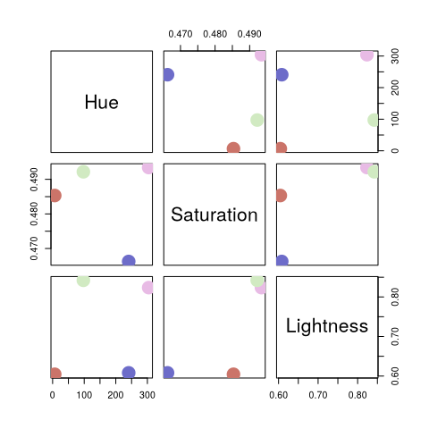

qualpalr generates distinct qualitative color palettes, primarily for use in R graphics. Given n (the number of colors to generate), along with a subset in the hsl color space (a cylindrical representation of the RGB color space) qualpalr attempts to find the n colors in the provided color subspace that maximize the smallest pairwise color difference. This is done by projecting the color subset from the HSL color space to the DIN99d space. DIN99d is (approximately) perceptually uniform, that is, the euclidean distance between two colors in the space is proportional to their perceived difference.
qualpalr was inspired by i want hue.
Usage
Let’s create a palette of 4 colors of hues from 0 to 360, saturation between 0.1 and 0.5, and lightness from 0.6 to 0.85.
We can retrieve the generated colors in hex format
pal$hex
#> [1] "#c86d75" "#6e6dc8" "#80c76d" "#d1d5df"Alternatively, we can create a palette using one of the predefined color subspaces and, optionally, adapt it to color deficiency (here deuteranomaly).
pal2 <- qualpal(
n = 4,
cvd = "deutan",
cvd_severity = 0.5
)We can look at a distance matrix of the pairwise color differences from the palette we have generated.
pal2$de_DIN99d
#> #c96c74 #6d6cc9 #81cbd5
#> #6d6cc9 21.60194
#> #81cbd5 25.95410 21.45727
#> #c8cb70 22.29156 29.27338 20.55607The palette may also be plotted with in a multidimensional scaling plot generated from the distance matrix of the colors in the palette.
plot(pal2)
Or it might be plotted in one of the provided color spaces as a scatterplot matrix.
pairs(pal2, colorspace = "HSL")
Installation
The current CRAN release can be installed by running
install.packages("qualpalr")The development version can be installed by running
devtools::install_github("jolars/qualpalr")Versioning
Versioning is based on semantic versioning.
Code of conduct
Please note that this project is released with a Contributor Code of Conduct. By participating in this project you agree to abide by its terms.
License
qualpalr is open source software, licensed under GPL-3.